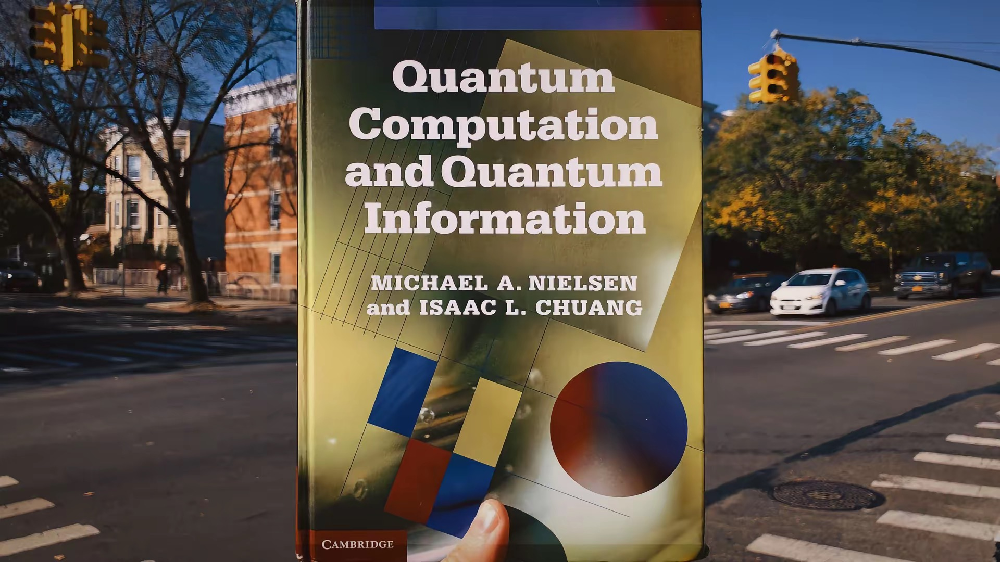

Quantum Computation Theory
"Nature isn't classical, dammit, and if you want to make a simulation of nature, you'd better make it quantum mechanical"
— Richard Feynman

Quantum Computing Theory is the field of study that explores how to harness the strange and powerful laws of quantum mechanics to perform computation in ways that are fundamentally impossible or impractical for classical computers.
While classical computers process information using bits (0 or 1), quantum computers use qubits that can exist in superposition of 0 and 1 simultaneously, can be entangled with each other, and exhibit interference—properties that give quantum computers their extraordinary potential.
Check this blog (link) for details of "PC5228 Quantum Information and Computation (2025 fall)" in NUS. Also check this link for a short PDF lecture note that Dagomir and I wrote for PC5228 course.
Check this blog (link) for details of "PC5228 Quantum Information and Computation (2024 fall)" in NUS. Also check this blog (link) for an older version.
Lecture Notes
I will write lecture notes for quantum computation theory here. The lecture notes will cover the following topics: basics of quantum computation, quantum algorithms, quantum complexity theory, and quantum error-correction codes.
An incomplete PDF version of lecture note that I wrote is here: link.
Recently, I’ve been continuously updating some lecture notes on quantum algorithms on my blog:
Recommended Reading
For further reading, here are some excellent textbooks and lecture notes on quantum computation theory:
-
John Preskill, Course Information for Physics 219 / Computer Science 219: Quantum Computation
(formerly Physics 229) — a collection of excellent lecture notes on quantum information theory.
[link]
In Fall 2020, the course was recorded; see the online video series:
Ph/CS 219A Quantum Computation.
-
Michael A. Nielsen and Isaac L. Chuang,
Quantum Computation and Quantum Information
— the standard textbook for quantum information and quantum computation theory.
-
Alexander Shen, Alexei Kitaev, and M. N. Vyalyi,
Classical and Quantum Computation
— a rigorous introduction to both classical and quantum computation from a theoretical computer science perspective.
- Phillip Kaye, Raymond Laflamme, and Michele Mosca,
An Introduction to Quantum Computing
, Oxford University Press (2007). (PDF link)
-
John Watrous,
Quantum Computation
— lecture notes providing a mathematically rigorous approach to quantum computation.
-
N. David Mermin,
Quantum Computer Science
Cambridge University Press (2012). (PDF link)
-
Giuliano Benenti, Giulio Casati, and Giuliano Strini,
Principles of Quantum Computation and Information, Volumes I & II — excellent resources for beginners.
-
韩永建 (Yong-Jian Han) and 郭光灿 (Guang-Can Guo),
《量子计算导论（全2 册）》 (Introduction of Quantum Computing) — in Chinese.
-
Scott Aaronson, Quantum Computing Since Democritus — lecture notes available at
PHYS771: Quantum Computing Since Democritus.
-
Thomas Wong,
Introduction to Classical and Quantum Computing
— an introductory textbook on quantum computing, featuring many Qiskit demonstrations.
-
Johannes Buchmann,
Introduction to Quantum Algorithms
— a book on quantum algorithms.
-
Andrew M. Childs,
Lecture Notes on Quantum Algorithms
— a very nice lecture note on quantum algorithms.
-
Umesh Vazirani,
CS294-2: Quantum Computation, Spring 2007,
— a very nice course on quantum computation.
The reader should also check out the following online lecture notes and resources on classical computation theory and complexity theory:
The following websites provide overviews of quantum algorithms, quantum complexity classes, and quantum error-correction codes:
-
Stephen P. Jordan,
Quantum Algorithm Zoo
— a comprehensive collection of quantum algorithms and their computational complexities.
-
Victor V. Albert, Philippe Faist, et al.,
Error Correction Zoo
— a comprehensive collection of quantum error-correction codes.
Some useful numerical tools
- QuTip, a python-based open-source software for simulating the dynamics of open quantum systems.
- Qiskit, a Python-based framework for quantum computing.